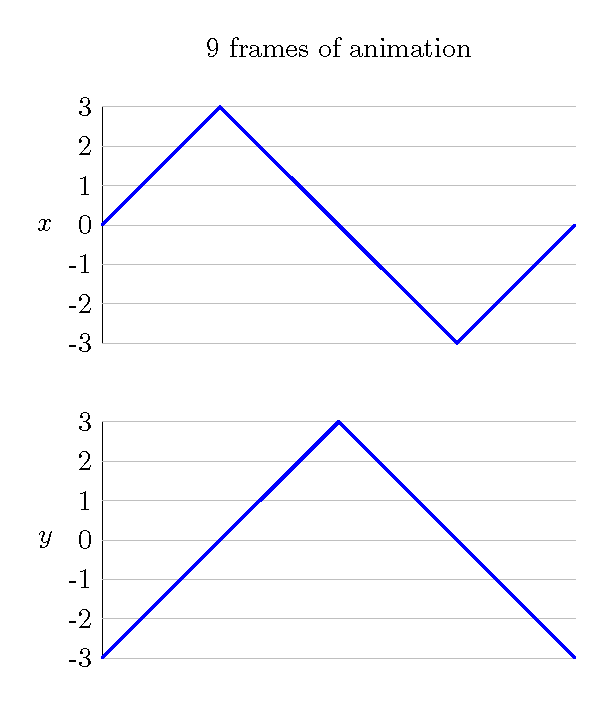
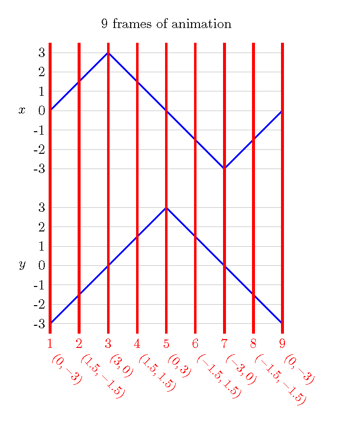
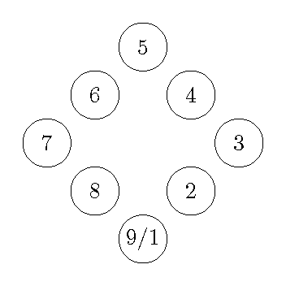

Consider the following graphs:

The first step is to break the animation into 9 equally-spaced frames. We will denote these frames with vertical lines. Notice that in order to get 9 frames, you must have 8 spaces. Corresponding to each frame is an x-coordinate and a y-coordinate. We have listed these under each marking.

These coordinates give us the locations to draw our shape (a circle for this example), with each shape getting its own frame. All of the images are drawn together here just to save space. Also notice that frames 1 and 9 are in the same position. From this, we can see that this is the animation of an object moving around a rotated square.
